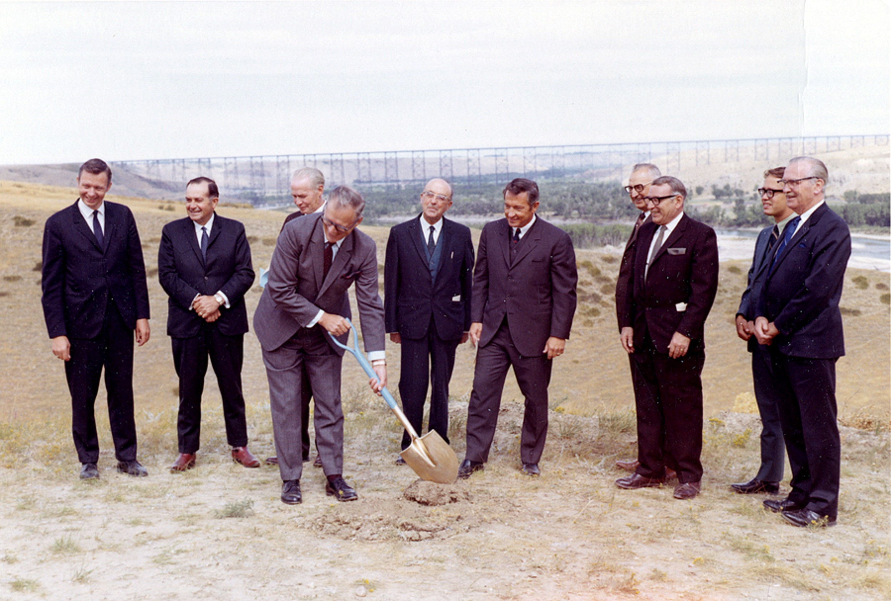

Unearthed

At the groundbreaking ceremony, the self-proclaimed Prophet of Doom announced: "This is only the beginning." Then the University of Lethbridge settled down, resting on the coulees and its laurels.... The innocuous tragedy of a dream slipping, surging into dissolution.
Indeed, it is [y]our university. Will you fight for it?
You're excited to unearth answers, aren't you? You have no clue how much can be found by covering up. Sometimes you need obfuscation to truly bring things to the surface.
Continue